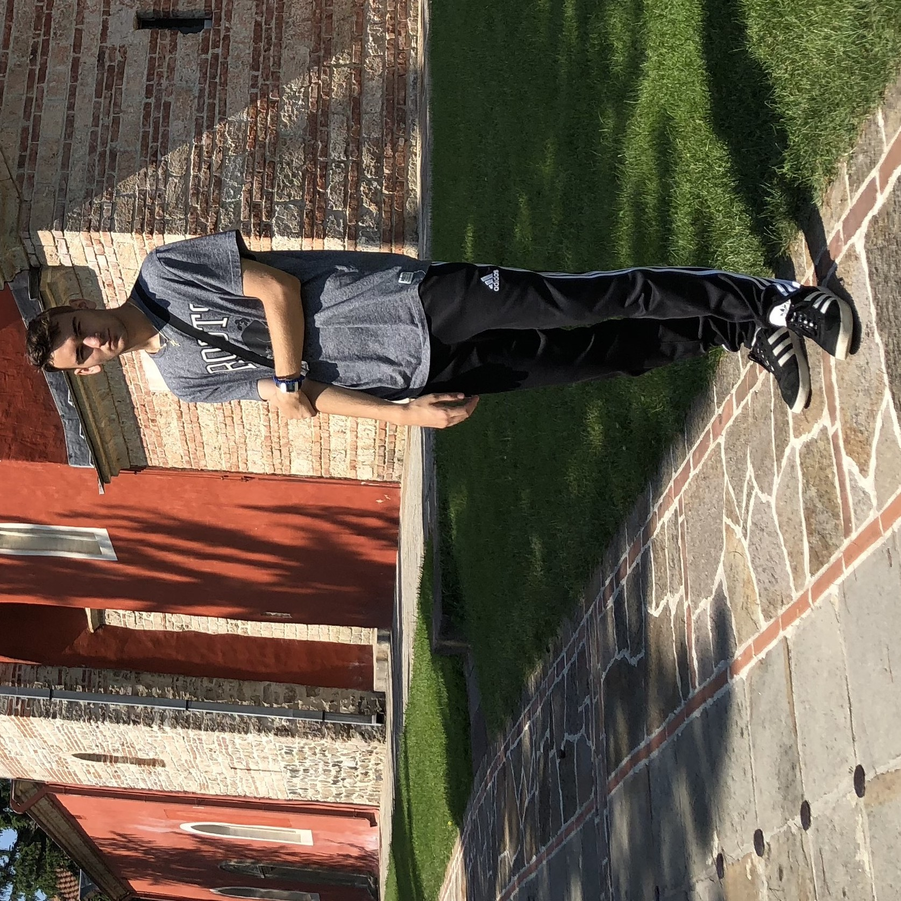

I am a Canadian studying computer science at the University of Toronto. My various interests include engineering,
photography and finding ways to make everything and everyone around me better. I often explore these ventures within my personal work and apply them in my everyday life.